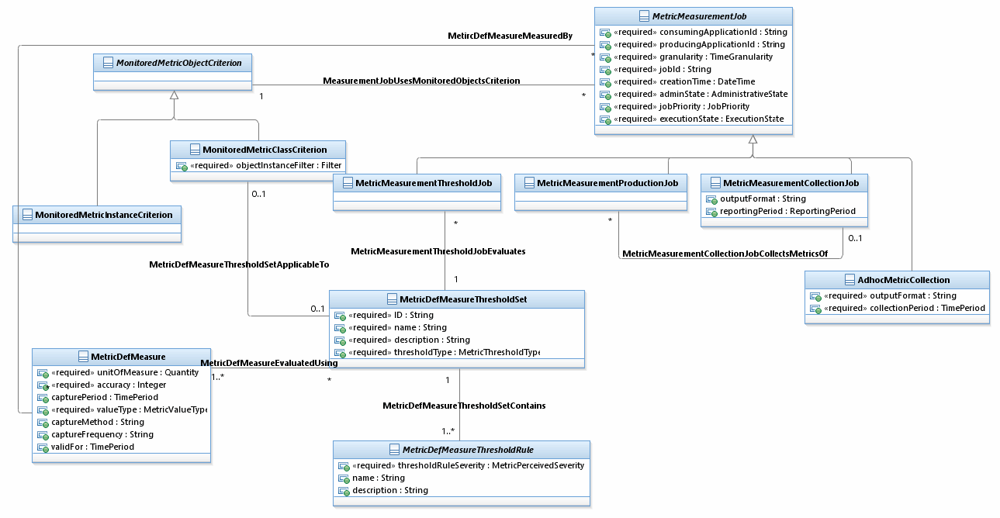

SID Models::Common Business Entities Domain::Metric ABE::Metric Addendum Figures::Figure Me.13 - Metric Threshold Job and MetricDefMeasureThresholdSet Diagram Figure Me.13 - Metric Threshold Job and MetricDefMeasureThresholdSet Figure Me.13 – Metric Threshold Job and MetricDefMeasureThresholdSet shows the different types of MetricMeasurementJob.A MetricMeasurementJob may be• either a job for evaluating thresholds defined over MetricDefMeasure (MetricMeasurementThresholdJob),• a job for producing MetricMesures according to a MetricDefMeasure (MetricMeasurementProductionJob),• a job for collecting MetricMeasures produced by another job (MetricMeasurementCollectionJob),• or a job for collecting MetricMeasures produced by another job to make available MetricMeasures for subscribers. (AdhocMetricCollection).A MetricMeasurementThresholdJob evaluates one MetricDefMeasureThresholdSet.A MetricMeasurementJob defines a scope of monitored objects using the MonitoredMetricObjectCriteria.A MetricMeasurementJob also defines a scope of monitored objects using the MonitoredMetricClassCriteria.

Properties:
View
Name
Figure Me.13 - Metric Threshold Job and MetricDefMeasureThresholdSet